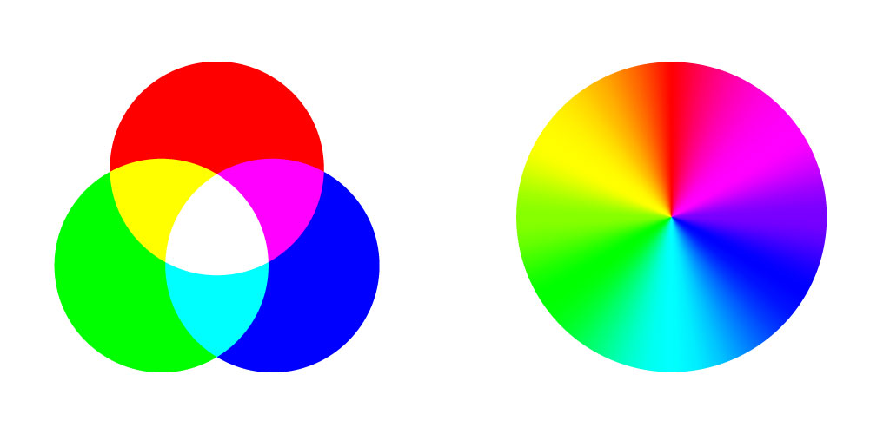

Palety kolorów:
RGB (Red, Green, Blue):
Każdy składnik ma wartość od 0 do 255 (np. biały to RGB(255, 255, 255), a czarny to RGB(0, 0, 0)).
CMYK (Cyan, Magenta, Yellow, Key/Black):
Kolory są tworzone przez nakładanie barw na papier (np. czarny to CMYK(0, 0, 0, 100)).
Jest odwrotnością RGB – im więcej barwnika, tym ciemniejszy kolor.
HEX (Hexadecimal):
Wykorzystywany w stronach internetowych i CSS.
Reprezentacja kolorów w postaci szesnastkowej, np. czarny to #000000, biały #FFFFFF, czerwony #FF0000.

Rozdzielczości:
2K 2048×1152 (16:9)
2K 2048×1024 (2:1)
3K 3072×1728 (16:9)
3K 3072×1536 (2:1)
4K 4096×2304 (16:9)
4K 4096×2048 (2:1)
8K 8192×4608 (16:9)
8K 8192×4096 (2:1)
16K 16384x9216(16:9)
16K 16384x8192 (2:1)
Głębia kolorów:
liczba bitów użytych do reprezentacji koloru danego piksela w określonym modelu przestrzeni barw (zwykle RGB). Im jest ona wyższa, tym większa jest rozdzielczość tonalna kolorów możliwych do uzyskania przy przetwarzaniu danych graficznych lub generowaniu obrazów na wyświetlaczu.
Głębię koloru wyraża się w jednostce bpp (od ang. bits per pixel, czyli bitów na piksel).